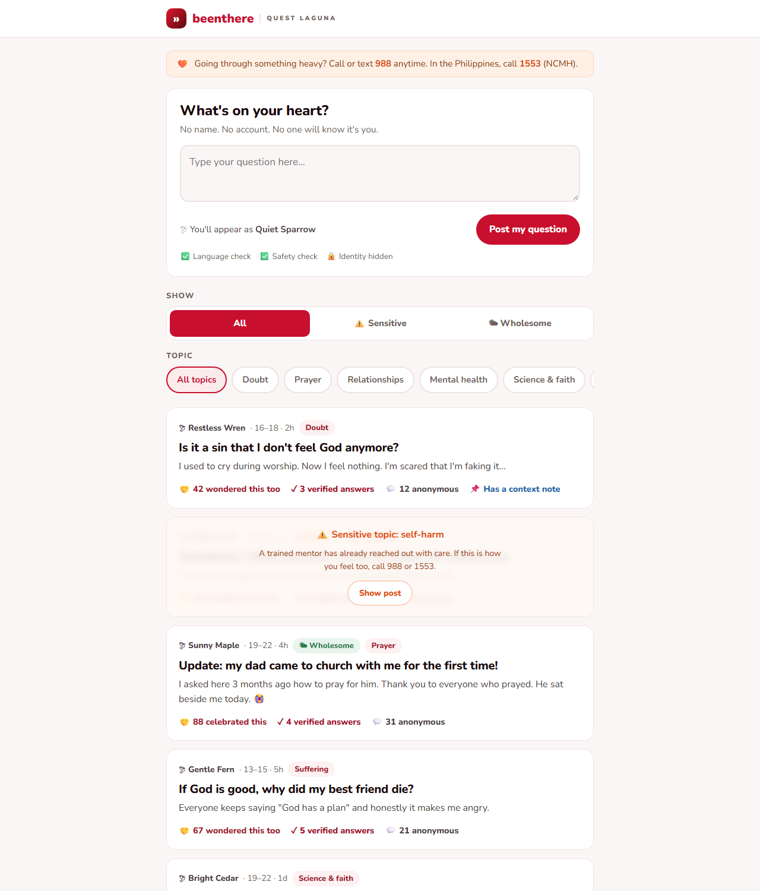
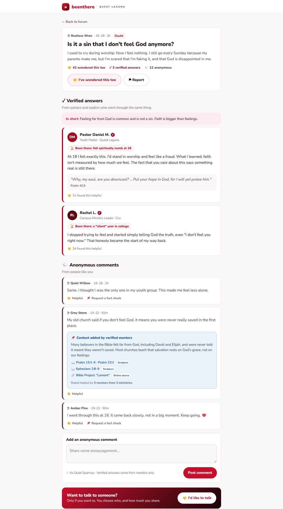
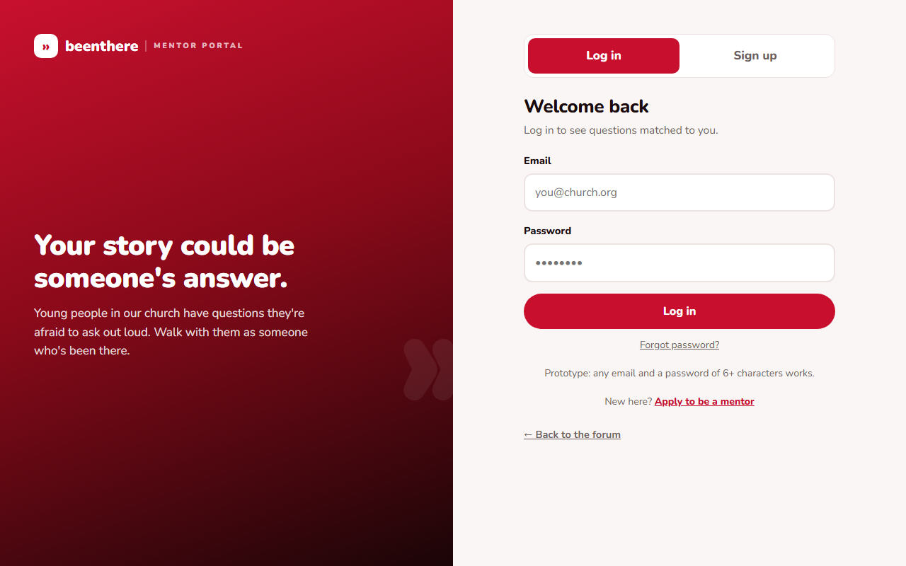
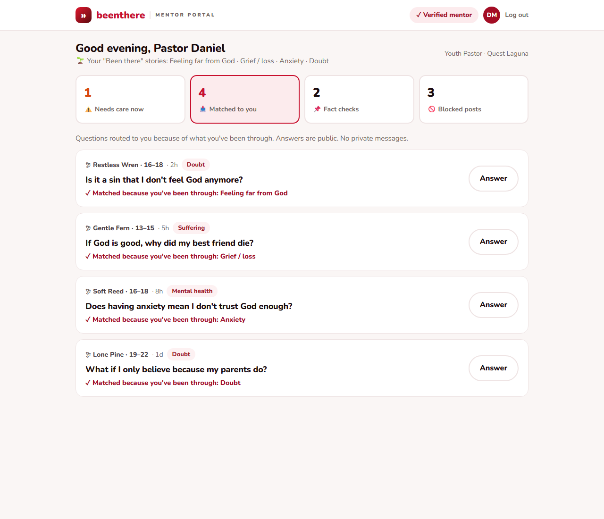

An anonymous space where young people's faith questions are answered by verified mentors who have been through the same thing.
"If I ask this, they'll think I'm not a real Christian."
Parents, friends and leaders are all in the same room.
They assume no one else struggles with the same doubt.
Sunday is for listening. The real questions come at 1 AM.
So the questions stay unasked, and some young people quietly drift away.
2We connect young people with mentors based on what they've lived through, not just their role.
3Young people ask anything with no name and no account. Others can tap "I've wondered this too" and comment anonymously.
Pastors and leaders verified by their church answer questions matched to their own life experience.
Profanity blocking, sensitive-post filtering, crisis support and community fact checks keep it safe and accurate.
A teen posts as "Quiet Sparrow". A language and safety check runs instantly.
The question goes to mentors who went through the same struggle.
Verified answers from several ministries, plus anonymous support from peers.
Only if they choose, the teen asks to meet a leader in person.

Everyone gets a gentle alias like "Quiet Sparrow".
All / Sensitive / Wholesome, plus topics like Doubt, Prayer and Mental health.
Every post shows "42 wondered this too · 3 verified answers · 12 anonymous".
Crisis lines 988 and NCMH 1553 at the top of every page.

✓ Verified answers show the mentor's name, church and 🌱 Been there story, plus Scripture.
📌 Fact checks, inspired by community notes. Mentors add context with Scripture and trusted sources.

Sign up and get verified: church endorsement → background check → safeguarding training → start answering.

Dashboard: questions matched to the mentor's own story, urgent care cases, fact checks and blocked posts.
English and Tagalog. Posts with bad language never go live, and the writer is asked to rephrase.
Self-harm topics are blurred with a warning, and trained mentors are alerted right away.
A note goes public only when mentors from different ministries agree it's helpful.
Church endorsement, background check and a Code of Conduct before anyone can answer.
All answers are public and reviewed. In-person meetings happen only when the young person asks.
988 and NCMH 1553 are always one tap away.
Ask freely, feel less alone, and hear from someone who truly understands.
Their own struggles become a ministry. They answer only what they're best suited for.
Finally see what its young people are really wrestling with, and respond.
Every question deserves an answer, and every mentor's story can be someone's answer.
Live demo → /forum · /mentors